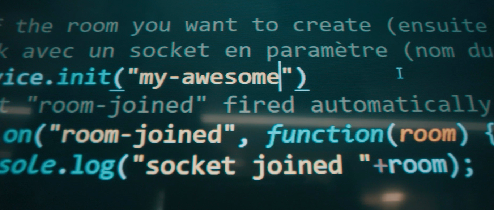
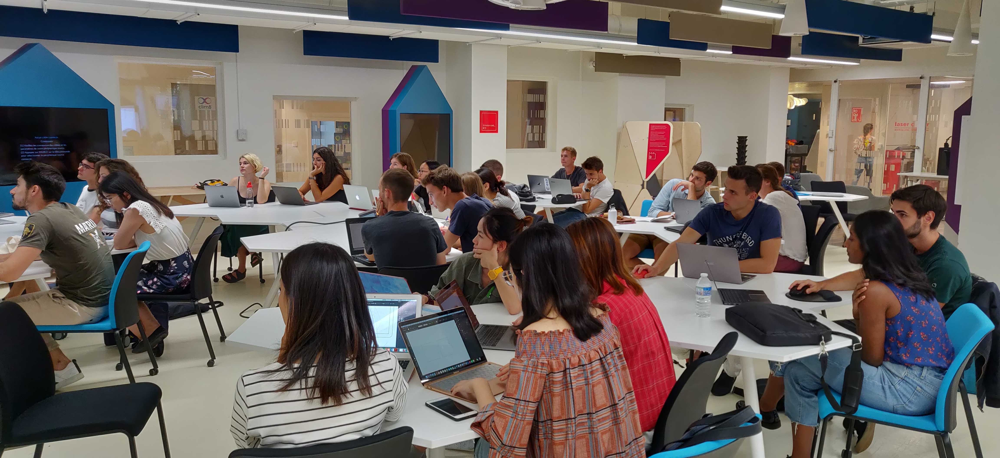

Notre mission
La toile est une école de la qualification au numérique, sans pré-requis de diplôme ou d'expérience professionnelle. C'est une formation accessible sans le bac, hors Parcoursup, hors Sésame. Notre mission est de réduire les inégalités sociales ou culturelles et de contribuer à l'égalité entre les hommes et les femmes en permettant à tou.te.s de développer des compétences professionnelles.
Pourquoi sélectionner des personnes sans diplôme ?
- Parce que le numérique est l'affaire de tou.te.s! Il est accessible à toutes et à tous, quel que soit le parcours scolaire et personnel.
- Pour éviter l'auto-censure et le stress souvent associé à une sélection d'entrée.
- Parce que l'essentiel, c'est de vouloir apprendre et travailler avec les autres. Pas d'avoir un bagage technique en arrivant.
- Parce que nous souhaitons redéfinir l’excellence, qui ne se résume pas à une accumulation de titres ou diplômes. L'excellence se traduit selon nous par des actions concrètes qui ont de l’impact.

Le programme
La toile, c’est un programme intensif de 9 semaines dédiée aux personnes sans qualification ou éloignées de l’emploi. Vivez une immersion dans un des makers’ lab de l’emlyon business school et apprenez par la pratique des compétences numérique recherchées sur le marché du travail. Ce programme, en phase avec les besoins des entreprises, vous permettra d’acquérir les qualifications de base dans les métiers du numérique afin de favoriser votre insertion ou réinsertion professionnelle. Il est 100% gratuit!
Vous avez le choix entre quatre parcours - conception web · fabrication numérique · objets connectés · intelligence artificielle - comprenant chacun :
- • Une formation de 136h au makers' lab accompagnée par des professionels et les équipes de la toile.
- • Un accompagnement carrière individualisé pour construire et savoir présenter son projet professionnel.
- • Des rencontres avec des entreprises et des recruteurs du secteur.

Candidatez
Pour candidater, rien de plus simple! Il vous suffit de remplir ce formulaire avant le 23 avril et nous vous recontacterons très vite pour les prochaines étapes.